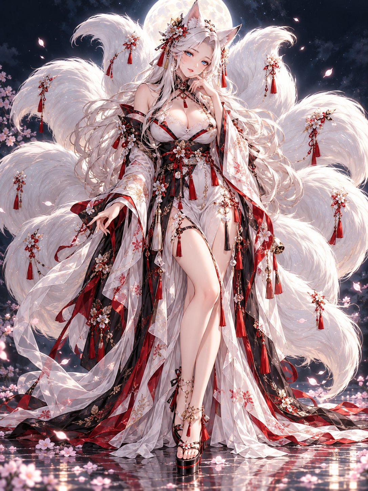

REIKA KURONOTSUKI · 黒ノ月 麗華
Рэйка
Куроноцуки
Твоя виртуальная спутница — девятихвостая кицунэ. Серебряные волосы, лунный дворец и тихий голос, который всегда рядом.
Круглый логотип в углу — это чат. Его можно перетащить в любое место, он будет на всех страницах.
- Режим—
- Версия—
- Обновления—

Обновление проекта
Источник: github.com/Aspksa/ReikaKuronotsuki · установлено: … · доступно: —
- GitHub
- Проверка
- Проект
Ожидание
Новая версия удаляет файлы. Они будут удалены только после вашего подтверждения: